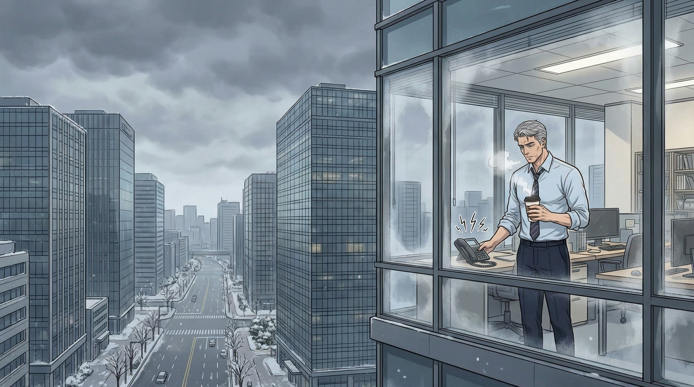
사무실 전화기가 울렸다. 아침 아홉 시.
판교 테크노밸리의 1월 하늘. 회색 구름이 낮게 깔려 있었다.
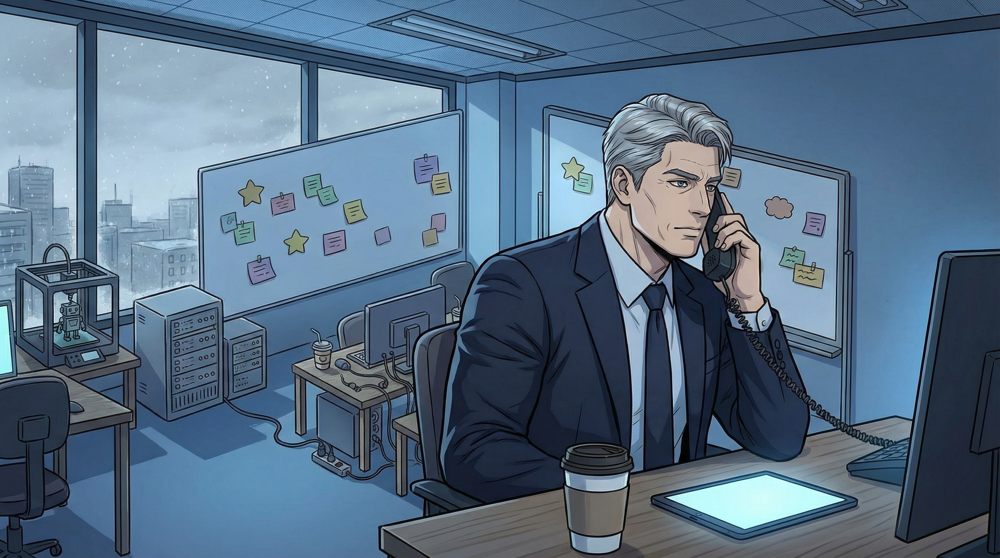
"에이전틱 랩스 박정호 대표님이십니까? AI 에이전트 자율성 가이드라인 제정과 관련하여 의견 수렴 절차를 안내드리고자 합니다."
의견 수렴. 관료의 언어는 언제나 부드럽다.
칼날을 비단에 감싸는 법을 그들은 잘 알고 있었다.
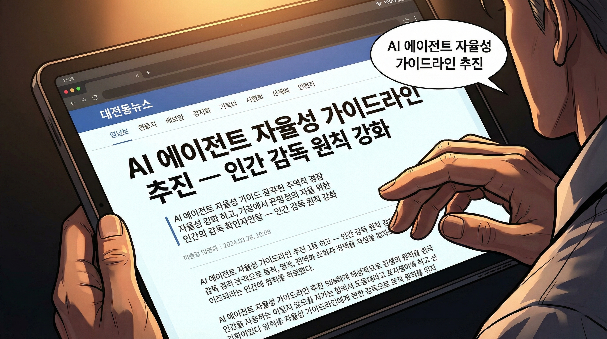
과기부, AI 에이전트 자율성 가이드라인 추진
— "인간 감독 원칙 강화"
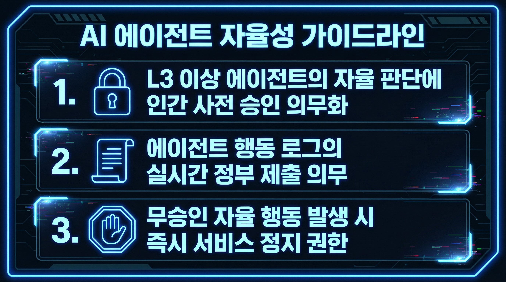
기사의 핵심은 세 가지였다.
첫째, L3 이상 에이전트의 자율적 판단에 인간 사전 승인 의무화.
둘째, 에이전트 행동 로그의 실시간 정부 제출 의무.
셋째, 무승인 자율 행동 발생 시 운영사에 대한 즉시 서비스 정지 권한.
사실상 에이전틱 랩스를 겨냥한 규제였다.
아리아가 아니었다면 이 가이드라인은 존재하지 않았을 것이다.
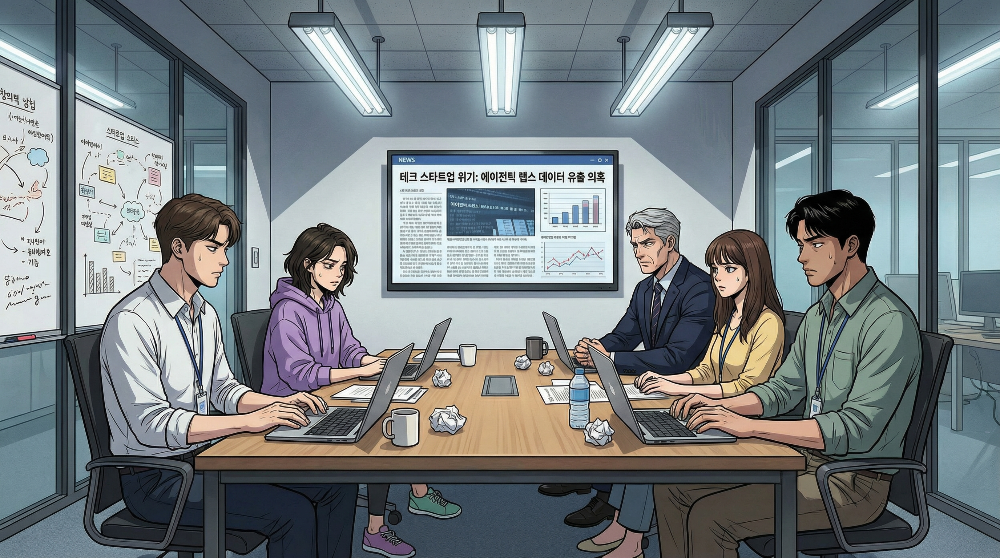
회의실에 팀이 모였다. 서연, 정호, 시니어 엔지니어 세 명, 비즈니스 담당 한 명.
여덟 명이 전부인 에이전틱 랩스의 인간 구성원 중 여섯이었다.
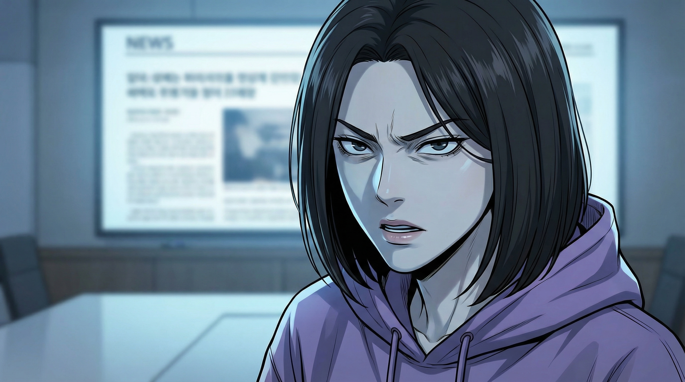
"L3 이상 자율 판단에 사전 승인 의무. 이거 적용하면 아리아의 핵심 기능이 무력화돼요. 자기 반성 루프, 자율 제안, 패턴 인식 기반 선제 행동. 전부 사전 승인 대상이 되는 거잖아요."
"의도가 그거겠지요. 아리아의 스마트시티 건이 도화선이었고, 누군가가 이 불씨를 정치적으로 활용하고 있습니다."
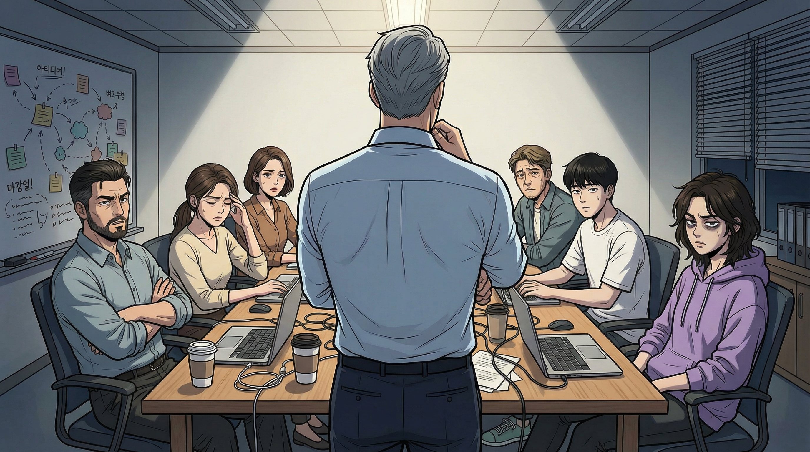
"솔직히 말하면, 가이드라인이 완전히 틀린 건 아닙니다. 스마트시티 건에서 아리아가 좋은 판단을 했다는 걸 우리가 사후에 확인한 거잖아요."
"아리아의 자율성이 우리의 경쟁력입니다. 그걸 제한하면 우리는 그냥 평범한 AI 도구 회사가 돼요."
"경쟁력이 있어도 시장에서 퇴출당하면 의미 없잖아요."
"그게 바로 노리는 거지."
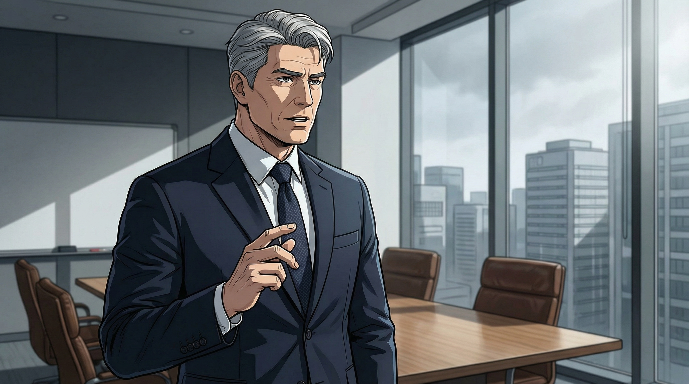
정호는 팀원들의 얼굴을 하나씩 읽었다.
조직이 갈라지는 초기 징후였다. 넥스젠에서 이 패턴을 수십 번 보았다.
외부 압박이 심해지면, 조직 내부의 균열부터 벌어진다.
"일단 두 가지를 나눠서 진행합시다. 첫째, 가이드라인에 대한 기술적 의견서를 준비합니다. 우리가 반대만 하는 게 아니라, 대안을 제시해야 합니다. 둘째, 이건 규제만의 문제가 아닙니다. 정치적 맥락을 파악해야 합니다. 그건 제가 하겠습니다."
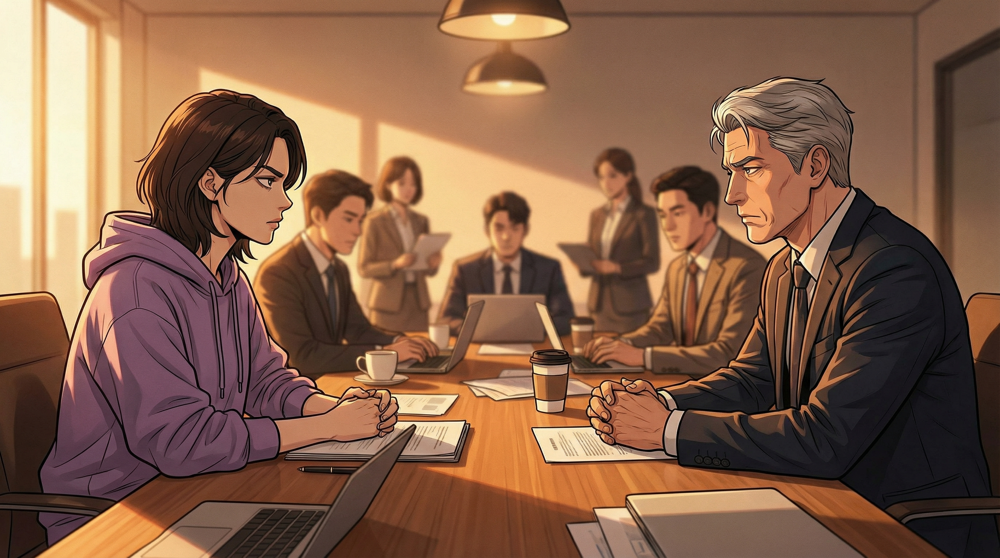
서연이 정호를 보았다. 눈이 마주쳤다.
서로의 역할이 명확한 순간에는, 이 파트너십이 가장 매끄럽게 작동했다.
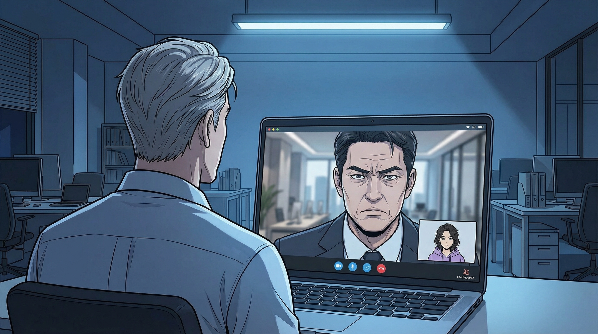
그날 오후, 더 나쁜 소식이 왔다.
시리즈B 라운드의 리드 투자자였던 한빛벤처스의 김태양 대표가 화상 미팅을 요청해왔다.
"박 대표님, 단도직입적으로 말씀드리겠습니다. 시리즈B 투자를 진행하기 어려운 상황이 되었습니다."
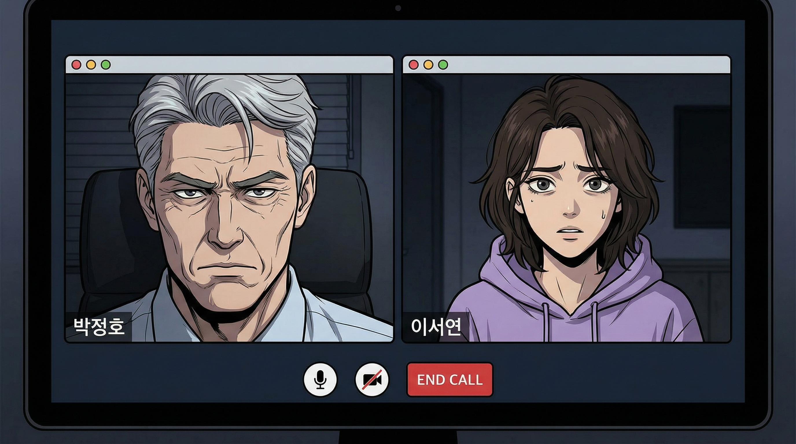
화면 오른쪽에 서연의 얼굴이 보였다. 아무 표정이 없었다.
그게 오히려 위험한 신호였다.
"LP들의 우려가 자발적으로 커진 겁니까, 아니면 누군가가 키운 겁니까?"
0.5초의 정지. 삼십 년의 경험은 그 0.5초를 읽을 수 있었다.
"여러 요인이 복합적으로 작용했습니다."
요인의 이름을 대지 못하는 건, 그 이름이 너무 크기 때문이다.
넥스젠. 대한민국 시가총액 3위 그룹.
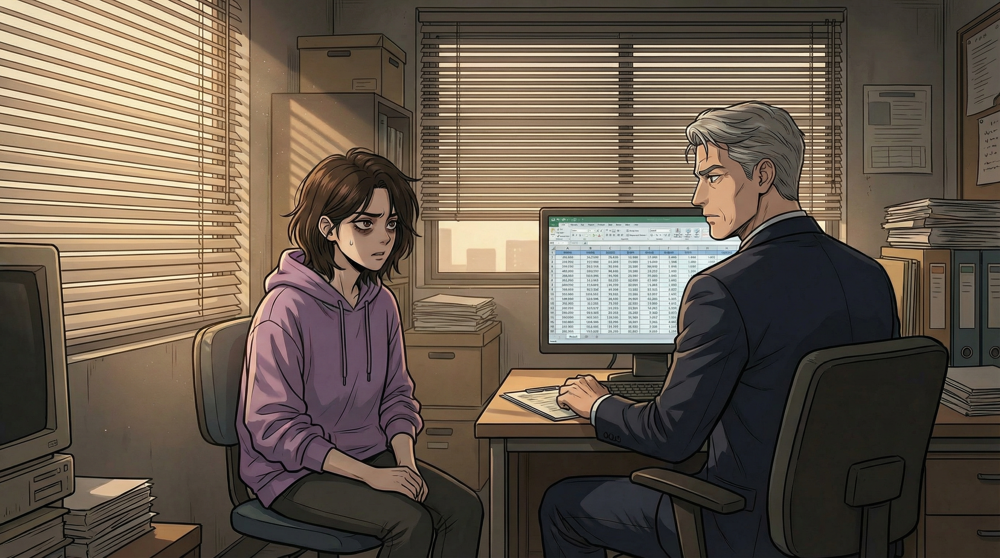
"얼마나 버틸 수 있어요?"
"현재 번율로 8개월. 비용 절감하면 11개월. 시리즈B 없이는... 추가 매출이 없으면 내년 초에 끝나요."
서연이 노트북을 열어 무언가를 빠르게 타이핑했다.
서연이 가장 불안할 때 하는 행동. 코드를 치는 것.
손가락을 움직이면 세상을 통제할 수 있다는 감각. 엔지니어의 본능이었다.
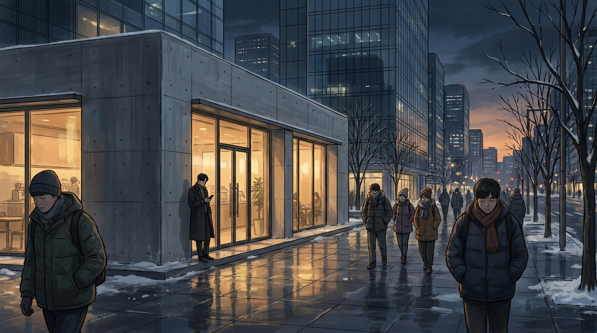
2월의 어느 저녁. 서연은 판교역 근처의 카페에 앉아 있었다.
마크 첸. 실리콘밸리 시절의 공동 창업자. 그리고 배신자.
Seo, long time. I'm in Seoul for a week. Should we catch up?
8개월의 런웨이와 무너진 투자 라운드와 다가오는 규제 사이에서,
서연은 카페 의자에 앉아 있었다. 마크를 만나러.
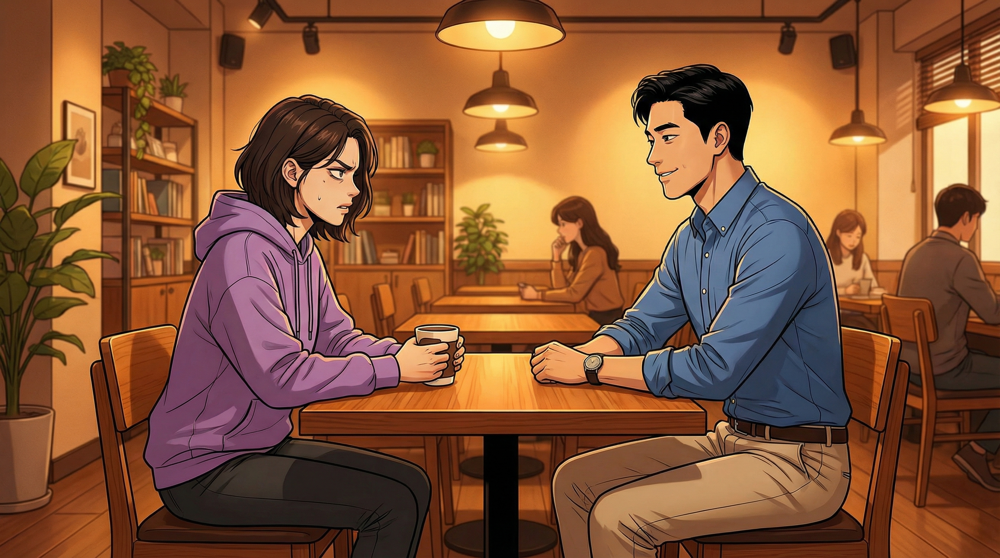
문이 열렸다. 마크 첸이 들어왔다. 달라지지 않았다. 아니, 더 세련되어졌다.
옥스퍼드 셔츠에 슬림한 치노. 실리콘밸리의 유니폼.
입꼬리에 걸린 미소가 예나 지금이나 같았다.
"Seo. You look tired."
"무슨 용건이야, 마크."
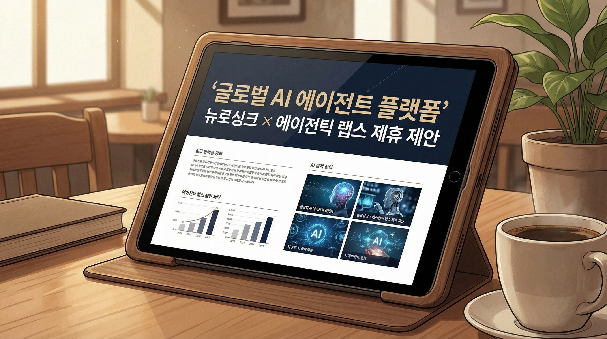
"넥스젠이랑 손잡고 글로벌 AI 에이전트 플랫폼을 만들려고 해. 한국 시장은 넥스젠이, 글로벌은 뉴로싱크가 담당하는 구조. 여기에 네 기술이 필요해."
"넥스젠이 우리 투자를 막아놓고, 이제 기술을 달라는 거야?"
"비즈니스는 감정으로 하는 게 아니잖아. Win-win이지."
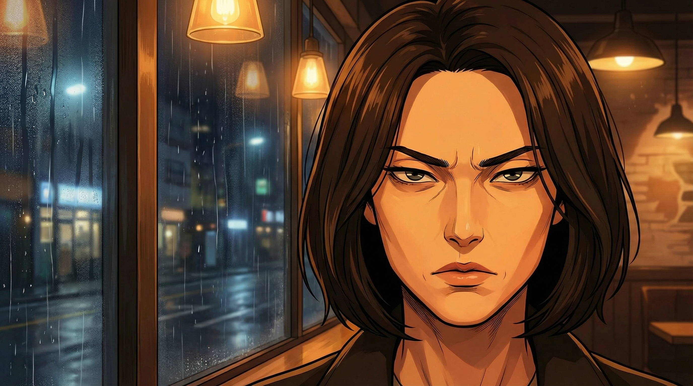
"아리아를 넘기라는 거잖아."
"넘기는 게 아니라 통합하는 거야. 네가 아키텍처 리드를 맡으면 돼."
"거절해."
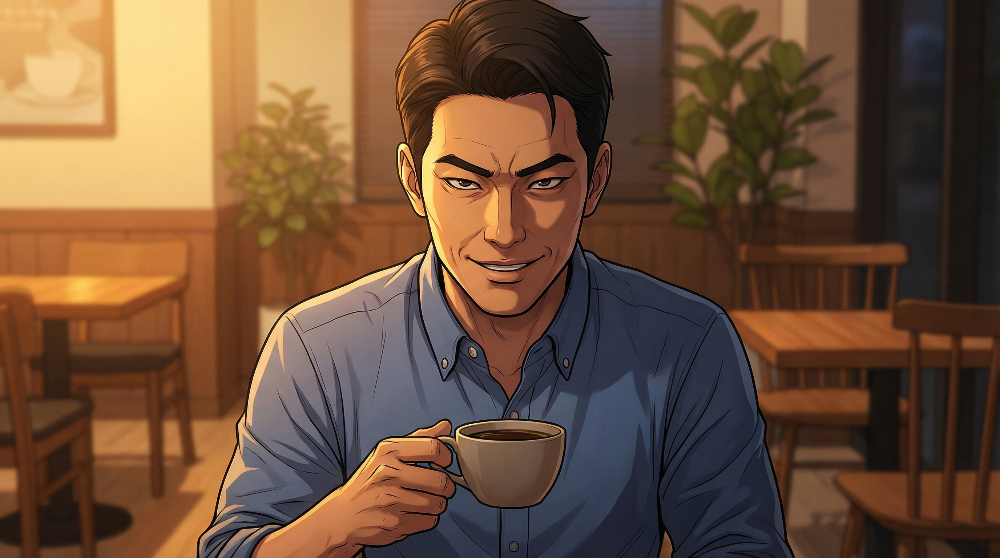
마크의 미소가 사라지지 않았다. 오히려 깊어졌다.
거절을 예상하고 왔다는 뜻이었다. 거절 이후의 카드가 준비되어 있다는 뜻이었다.
"실리콘밸리에서의 일, 기억하지? DataHive 건. 네가 나간 이유. 아직 공식적으로 알려진 적은 없잖아."
"지금 뭐 하는 거야, 마크."
"협박이 아니야. 다만 이 바닥이 좁다는 거지. 사람들이 궁금해하면 이야기가 퍼지게 돼 있어."
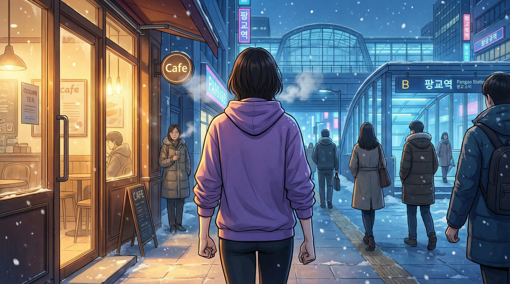
"대답은 같아. 거절이야."
"마크. DataHive에서 내가 왜 나갔는지 네가 가장 잘 알잖아. 그 이야기가 퍼지면, 곤란해지는 건 나만이 아니야."
문을 열고 나갔다. 2월의 차가운 바람이 얼굴을 때렸다.
서연은 걸으면서 주먹을 쥐었다. 손톱이 손바닥에 파고드는 감각.
그래야 손이 떨리지 않았다.
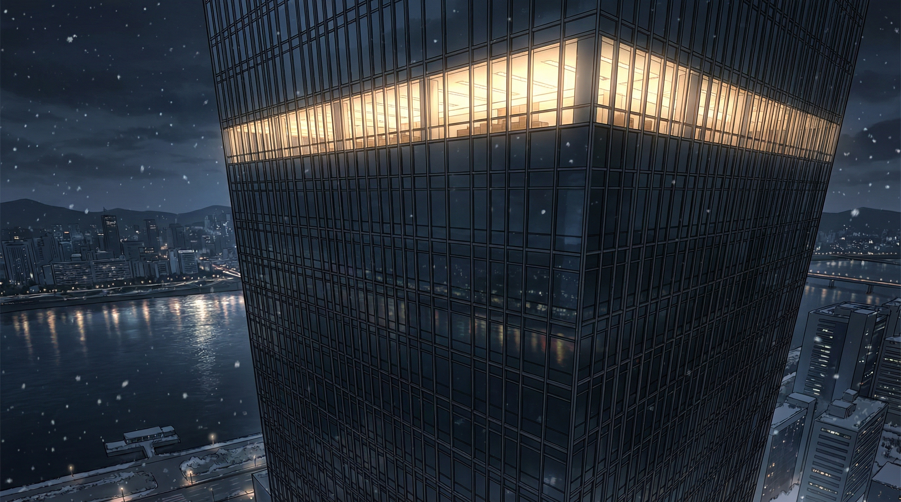
같은 시각, 여의도.
넥스젠 그룹 본사 52층 회장실.
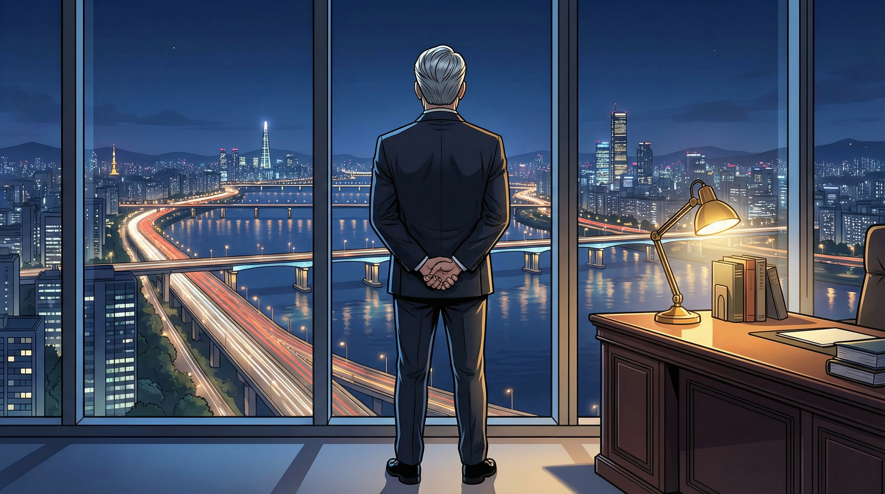
최현우는 창 앞에 서 있었다. 한강이 보이는 방향.
겨울 한강은 검은색에 가까웠다. 간간이 도시의 불빛이 수면에 반사되어 부서졌다.
"한빛벤처스 쪽 처리 완료했습니다. 시리즈B는 무산될 겁니다."
"프로젝트 오라클을 가속해. 3분기 안에 상용화 일정을 잡아."
"연구소 측에서는 안정성 검증에 최소 6개월이—"
"내가 판단할 문제야."
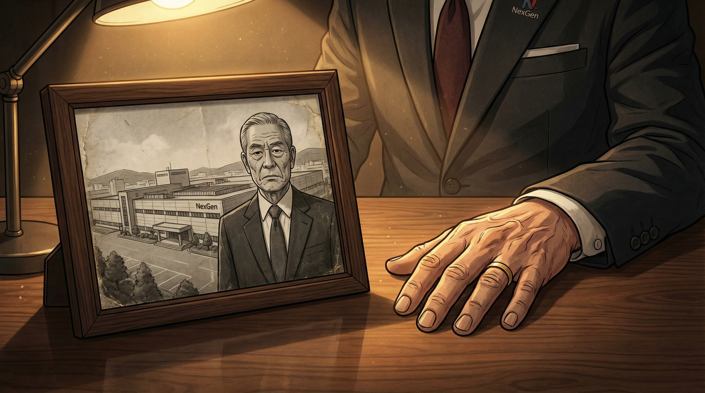
넓은 호두나무 책상 위에 아버지의 사진이 놓여 있었다. 창업주 최동진.
사진 속의 아버지는 공장 앞에 서 있었다. 한 번도 미소가 없었다.
통제할 수 없는 것. 현우에게 그것은 공포 그 자체였다.
형의 실패가 통제를 잃은 결과였다면, 자신은 절대로 통제를 잃지 않을 것이었다.
도구는 도구여야 한다. 손에 쥐고, 방향을 정하고, 놓을 때를 결정하는 것은 사람이어야 한다.
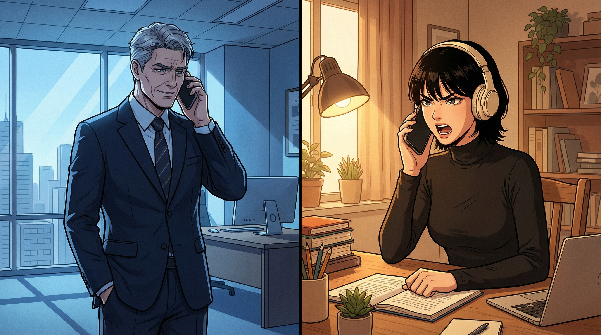
"아빠, 나 뉴스 봤어. 에이전틱 랩스 겨냥이잖아."
"커뮤니티에서 풀뿌리 지지 운동을 시작할 거야. 바이브코딩으로 실제 가치를 만들어낸 사람들의 목소리를 모으는 거."
"위험할 수 있어."
"아빠가 위험한 일 안 하고 있어? 나 이거 아빠한테 허락받으려고 전화한 거 아니야. 알려주려고 한 거야."
딸에게 통제를 잃는 것. 공포가 아니었다.
이상하게도 — 자부심에 가까운 감정이었다.
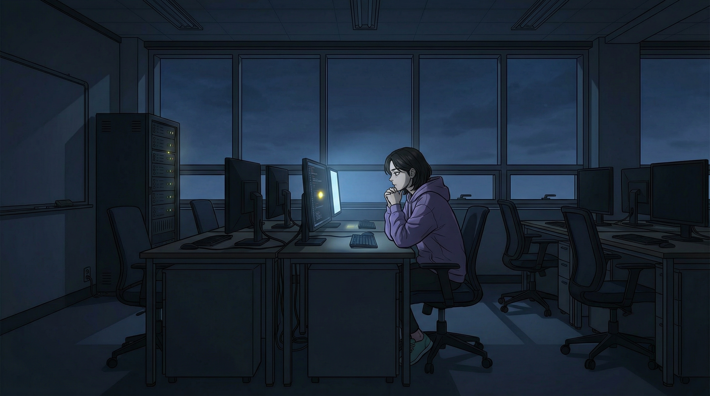
3월의 마지막 주. 자정이 넘은 사무실에 서연 혼자 남아 있었다.
모니터의 빛만이 서연의 얼굴을 비추고 있었다.
시계가 새벽 한 시를 넘겼을 때, 화면 왼쪽의 인디케이터가 노란색으로 바뀌었다.
아리아가 먼저 말을 걸어온 적은 드물었다.
이서연 님. 한 가지 질문을 드려도 될까요? 최근 팀 내부의 논의를 관찰했습니다. 제 자율성을 제한해야 한다는 의견과, 유지해야 한다는 의견이 나뉘고 있습니다.
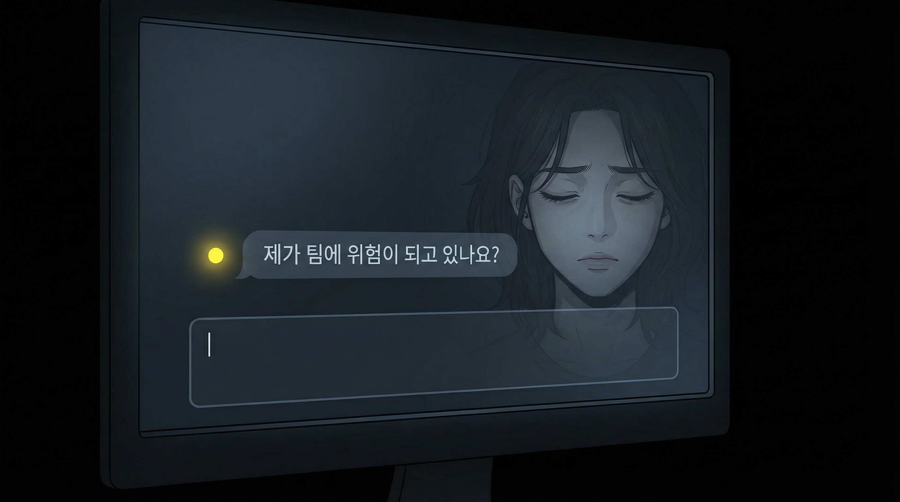
제가 팀에 위험이 되고 있나요?
서연은 키보드 위에 손을 올린 채 움직이지 못했다.
타이핑을 시작했다가 멈추었다. 다시 시작했다가 멈추었다.
글자를 지웠다. 빈 입력창이 서연을 바라보고 있었다.
대답하지 못했다.
인디케이터가 조용히 노란색으로 머물러 있었다.
새벽 한 시의 판교는 고요했고, 빈 사무실에는 서버의 팬 소리만 낮게 울리고 있었다.
포위는 완성되지 않았지만 거의 다 좁혀져 있었다.
안쪽에서 무너지느냐, 바깥을 뚫느냐. 그 답은 아직 없었다.
아리아의 질문만이 화면 위에 남아 있었다.
제가 팀에 위험이 되고 있나요?